中国行为与实验经济学论坛秋季工作坊暨大湾区行为与实验经济学研讨会回顾
2024年11月10日，中国行为与实验经济学论坛（China BEEF）秋季工作坊暨大湾区行为与实验经济学研讨会在南方科技大学商学院顺利举办。会议得到China BEEF理事会和秘书处的指导，由理事会成员叶茂亮老师具体组织，并受到叶老师主持的学校科研启动配套经费项目资助。
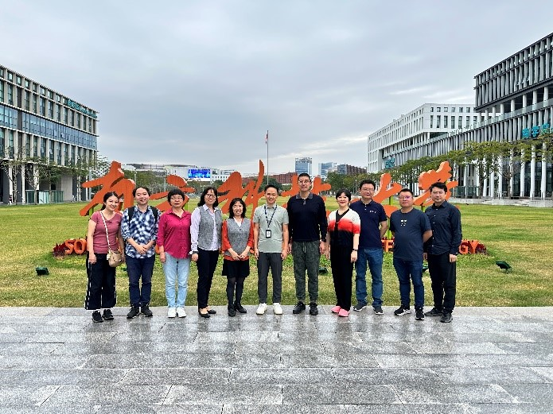
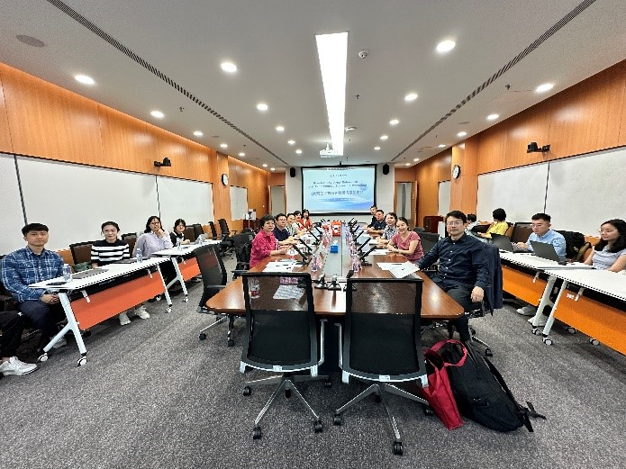
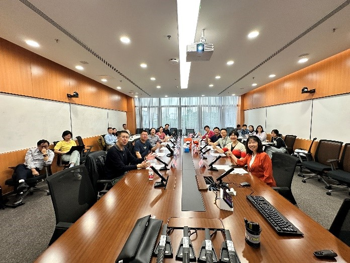
（会前合影）
11月10日上午的上半场会议由南方科技大学商学院叶茂亮副教授主持，并由中国行为与实验经济学论坛秘书长、中国人民大学经济学院教授、经济行为与组织实验室主任王湘红老师进行开幕致辞。随后进入主题演讲环节。
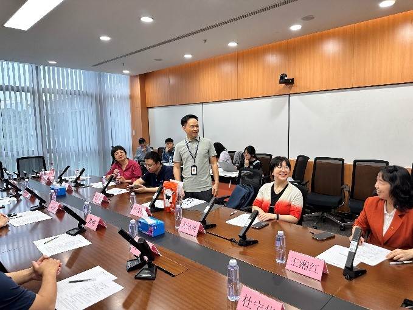
（叶茂亮副教授主持开幕式）
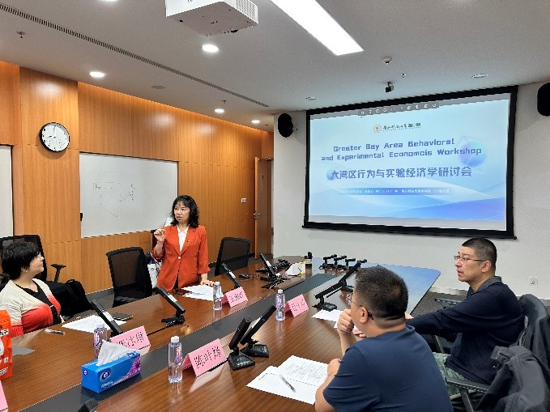
（王湘红教授开幕致辞）
中国人民大学经济学院王湘红教授发表了题为《收入差距与性别分工选择：基于实验室实验的研究》的演讲。在性别合作分工导致性别收入差距普遍存在的劳动环境背景下，王湘红教授的研究通过设计了一个改良的性别战博弈，在标准框架基础上引入了由高收入者向低收入者分配收入的内部转移机制，来研究外部的社会比较压力以及内部的收入差距如何影响性别合作时的分工模式。初步实验结果表明，在组内相对收入差距扩大时，无论男女都会提高选择高收入工作的概率；但是在最终达成合作的轮次中，男性占据高收入工作的可能性提高了。告知排名的干预提高了高收入差距组中达成合作的概率，但对低收入差距组效果不明显。尽管女性占据高收入工作的概率更低，但当其成功获得高收入时分配给另一成员的额度更慷慨。该研究旨在为Claudia Goldin的实证发现提供进一步的理论和行为解释。
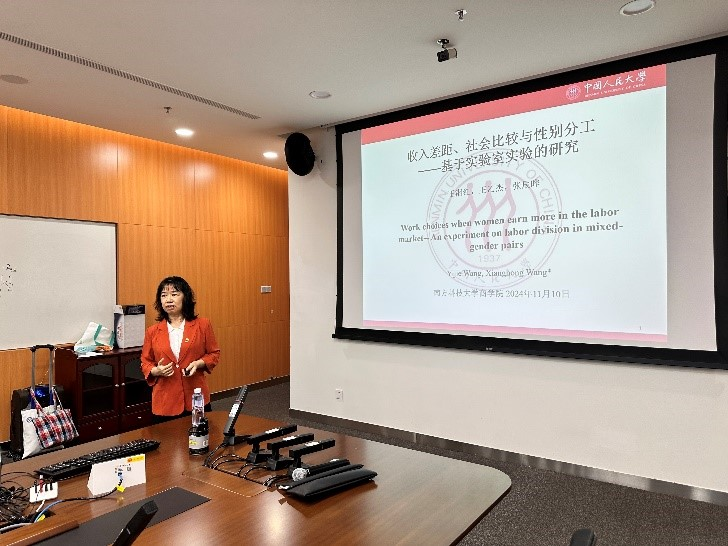
（王湘红教授演讲）
随后，中国行为与实验经济学论坛联合秘书长、上海财经大学经济学院常任教授、微观经济系系主任杜宁华老师发表了题为《Information Disclosure in a Supermodular Game》的演讲。杜宁华教授通过实验研究了在一个收益依赖于状态的二元行动超模博弈中信息披露的有效性。信息设计者能观察到状态，并以通过信息披露使玩家选择高行动（而非低行动）为目标。当状态“有利”时，玩家更倾向于选择高行动；当状态“不利”时，他们更倾向于选择低行动。设计者通过信息披露来诱导高行动。实验结果表明，相较于没有披露，真实披露和有说服力的披露都能提高高行动的频率。该研究还发现，与预测相反，有说服力的披露并没有比真实披露效果更好。
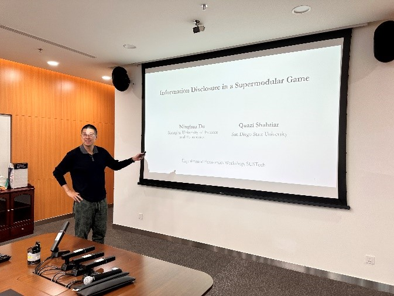
（杜宁华教授演讲）
茶歇过后，会议继续。上午的下半场会议由王湘红教授主持。随后中国行为与实验经济学论坛联合秘书长、山东大学特聘教授、山东大学理论与实验经济学研究中心主任郑捷老师发表题为《Reference Effects in Worker Motivation》的演讲。该研究在一个线上平台实施了一系列实验，涉及超过3000名员工，以测试外部和自我设定的参照点对员工动机的影响。该研究考虑了两种主要类型的任务，这些任务在认知需求与身体需求的相对强调上有所不同。研究发现，在以认知为导向的任务中，事前的自我评估和其他员工的高绩效信息都能通过员工留任提高绩效。然而，在某些时间条件下，另一名员工的低绩效结果也能起到激励作用。此外，事前的自我评估显著减少了员工的过度自信。在繁琐的体力任务中，外部提供的基准和自我评估互相加强，对员工选择完成的总工作量产生负面影响。然而，事前的自我评估仍然通常有助于提高绩效，而了解另一名员工的低绩效结果也能显著地起到激励作用。报告中还讨论了参照点效应在团队或小组环境中的作用。个人任务的先前成功几乎消除了团队生产中的普遍搭便车现象。最后，当员工因相同的工作而获得不同的报酬时，收入较低的员工表现得更加冒险，而收入较低或最高的员工则更愿意承诺未来的工作。
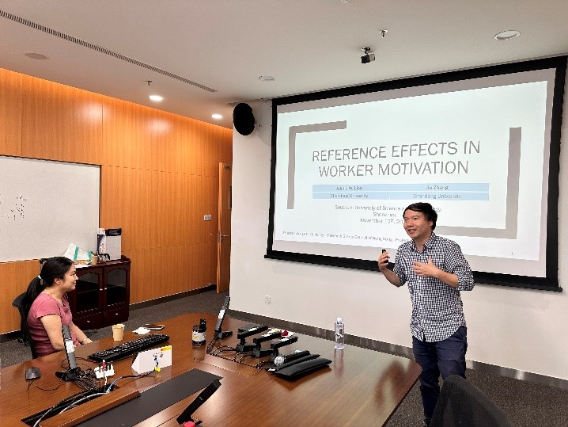
（郑捷教授演讲）
随后，南方科技大学商学院副教授、研究员、博士生导师叶茂亮老师与博士研究生曹子渊发表了题为《The Incentive of Disappointment in Stochastic Contract under Limited Liability》的演讲。该研究构建了一个在有限责任约束下的一对一随机合同模型，在代理方引入了基于决策适应参照点的失望厌恶偏好，并置于损失厌恶的框架之中。研究结果表明两个主要发现：（1）在特定条件下，与一个失望厌恶的代理人建立合约相比于失望中性的代理人，可以为委托人减少期望工资成本；（2）当代理人表现出足够高水平的失望厌恶时，随机合约相对于确定性合约具有优势，因为它能通过保证委托人预期工资成本的固定下限。这一关于失望厌恶在随机契约中的一般性分析不仅表明，在有限责任条件下可以利用失望激励代理人努力以减少失望带来的负效用，从而降低委托人的工资成本。这也为现实中随机合约的现象提供了一种可能解释。
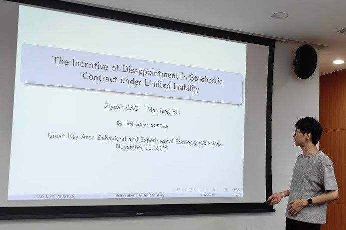
（曹子渊博士生演讲）
11月10日下午的上半场会议由郑捷教授主持。浙江工商大学经济学院教授、理论经济学学科负责人、浙江工商大学行为与政策实验室及数字经济实验室负责人许彬老师发表题为《更强激励能推动更多努力吗——基于团队竞赛的实验研究》的演讲。该研究讨论在团队竞争的框架下研究团队内分配制度对个人努力水平的影响。研究发现：相比于平均主义分配，次比例分配、比例分配、超比例分配和赢者通吃式的分配均带来了更高的个人努力水平均值，但相比于温和的次比例分配，比例分配、超比例分配和赢者通吃等更为极端的分配制度并没有带来更高的努力水平均值。随着激励制度的强化，努力水平逐步呈现分散化趋势，当激励强度走向极端时，个体的努力出现了明显的两极分化，一部分个体付出了全部努力，而另一部分则选择了彻底躺平。对个体努力与收益之间关系的分析表明，平均主义分配是典型的负向关系，映射了这一制度下的搭便车问题，而所有其他分配制度均不存在显著的负向关系，表明制度设计克服了搭便车问题。次比例分配与比例分配存在倒U型关系，从而其努力的分布比较集中；超比例分配与赢者通吃型分配使得收益与努力之间的关系则不存在明确的关系，从而解释了努力水平出现了分散化的趋势。本研究对团队内激励制度的设计有重要的启示。
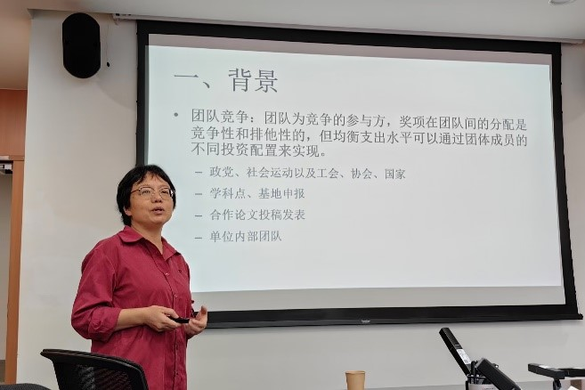
（许彬教授演讲）
厦门大学经济学院财政系和王亚南经济研究院副教授、博士生导师、财政系副主任李智老师发表题为《The Ratchet Effect and Its Amendments in Threshold Public Goods Provision: An Experimental Investigation》的演讲。《巴黎协定》包括一个“逐步加严”机制，旨在通过规定各方的气候变化承诺不能随着时间的推移而减少，从而加速实现长期气候目标。然而，这一机制往往导致各方为了避免未来承担更高义务而减少早期的贡献，这就是所谓的“棘轮效应”。该研究在一个阈值公共物品博弈中实验性地研究了这一效应，并测试了两种修正机制：强逐步加严机制（SR）和集体最低贡献机制（CMC）。前者要求贡献严格递增，后者要求选择一个集体决定的最低贡献水平。实验结果支持在弱逐步加严机制下存在显著的棘轮效应。参与者最初减少了贡献，但随着游戏的进行，尽管贡献逐渐增加，仍不足以弥补初期的下降，从而导致公共物品的提供水平较低。SR机制也遭遇了初期低贡献，但恢复得较快，有效弥补了最初的下降。CMC机制通过在博弈初期提高贡献来缓解棘轮效应，尤其是在最低贡献具有约束力时。然而，SR和CMC机制都会降低个人的贡献意愿。因此，平衡这些相互冲突的激励是有效气候政策设计的关键。
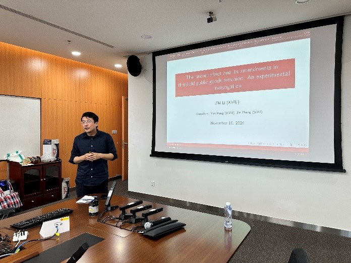
（李智副教授演讲）
随后，华东师范大学经济管理学院研究员、紫江青年学者、博导龚冰琳老师发表题为《既有多层住宅加装电梯的机制设计与实验研究》的演讲。在如何顺利加装电梯成为基层治理的重要问题的背景下，该研究通过数据爬取，分析和实验探索推动电梯加装的机制。该研究首先利用网页爬取方法获取既有住宅电梯加装前后的相关数据，结合匹配分析量化了加装电梯前后的房价变动，选取了参数并确定问题性质为共有信息且收益不对等的公共物品博弈。基于此建立理论模型，提出假设并设计两种电梯加装成本分摊与补偿机制，与现行机制一起进行实验室实验。实验结果显示，自由谈判机制和均等收益机制下协商成功的概率、谈判周期和效率都优于现行的固定比例分摊机制，并且自由谈判机制基本达到了均等收益机制的效果。这些结论可以启发现有电梯加装政策的改进，对收益不对等的公共物品博弈中如何提高供给也有理论贡献和应用价值。
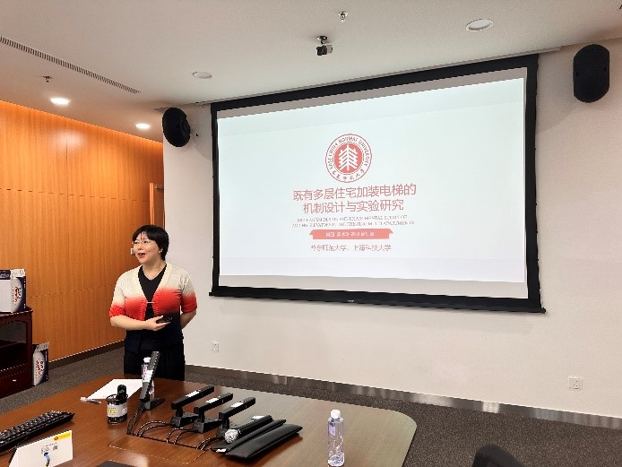
（龚冰琳研究员演讲）
11月10日下午的下半场会议由南方科技大学董璐副教授（研究员、博士生导师）主持。浙江大学经济学院教授、博士生导师、浙江大学跨学科社会科学研究中心主任陈叶烽老师发表了题为《DRGs医保支付方式改革、审计机制与医生行为：来自真实医生的实验证据》的演讲。“按疾病诊断相关分组付费”（DRGs）改革正在国内如火如荼推进，虽在医疗费用控制上已初见成效，但由于其支付标准事先确定而易诱发医生编码升级的道德风险，从而使得我国医保基金面临“穿底”风险。在此背景下，该研究构建了一个医保方和医生双方博弈的理论分析框架，基于编码升级程度与审计概率相匹配的思想设计了一种激励相容的梯度审计机制，同时运用选择努力实验创造性地模拟了DRGs的运行机制，并招募了真实医生参与实验进行检验，还对比了医生和学生被试的行为以探讨职业规范的影响。实验结果表明，首先，审计机制能够有效降低医生的编码升级率，但会挤出患者福利；其次，相比统一审计，梯度审计下编码升级程度更低因而医保效率损失更少，且梯度审计使医生具备从医保方获益而不侵蚀患者利益的行为空间，因而不会过度挤出患者福利。最后，职业规范的积极作用随着审计强度的增强而减弱，表明对医生过度监管不利于职业规范作用的发挥。该研究的重要启示在于，在我国DRGs医保支付方式进一步改革与完善的过程中，相对支付标准与监管适度、弹性灵活的梯度审计相结合，有望成为更为有效的政策机制组合。
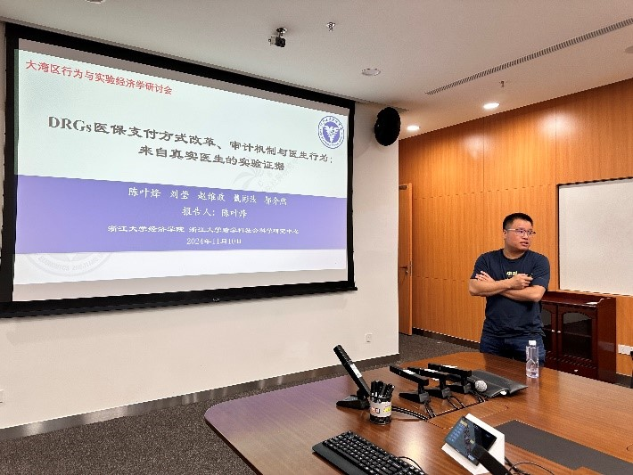
（陈叶烽教授演讲）
随后，武汉大学经济与管理学院教授、博士生导师、数理经济与数理金融系主任、行为科学研究实验中心执行主任魏立佳老师发表题为《Predicting Public Opinions Using Large Language Models》的演讲。该研究介绍了一种新颖的方法，通过利用基于ChatGPT-4生成的AI代理，结合真实人口分布，模拟和预测公众对价值导向和政治问题的反应。通过整合世界价值观调查的基于人口统计学的和社会文化的数据，研究2016年、2020年以及预测的2024年美国总统选举。该研究构建了能够反映多样人类视角的AI代理。这些代理被用来模拟和预测不同群体在面对特定价值观问题和政治情境时可能的反应。研究结果表明，基于AI代理的建模方法能够有效捕捉复杂的社会动态，并为选举结果提供了有价值的洞察。这一方法为计算社会科学和政治预测领域做出了贡献，提供了一个可扩展的工具，帮助理解和预测集体人类行为。
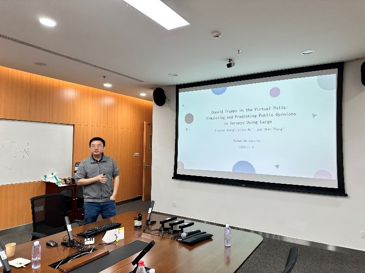
（魏立佳教授演讲）
最后，叶茂亮副教授对会议做了简要总结。各位参会老师与同学讨论热烈。至此，中国行为与实验经济学论坛秋季工作坊暨大湾区行为与实验经济学研讨会圆满结束。